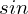
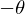
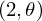

Theorem sine_linear_bound_nonpos of type Forall¶
from the theory of proveit.trigonometry¶
see dependencies
In [1]:
import proveit
# Automation is not needed when only building an expression:
proveit.defaults.automation = False # This will speed things up.
proveit.defaults.inline_pngs = False # Makes files smaller.
%load_theorem_expr # Load the stored theorem expression as 'stored_expr'
# import the special expression
from proveit.trigonometry import sine_linear_bound_nonpos
In [2]:
# check that the built expression is the same as the stored expression
assert sine_linear_bound_nonpos.expr == stored_expr
assert sine_linear_bound_nonpos.expr._style_id == stored_expr._style_id
print("Passed sanity check: sine_linear_bound_nonpos matches stored_expr")
In [3]:
# Show the LaTeX representation of the expression for convenience if you need it.
print(stored_expr.latex())
In [4]:
stored_expr.style_options()
In [5]:
# display the expression information
stored_expr.expr_info()
| core type | sub-expressions | expression | |
|---|---|---|---|
| 0 | Operation | operator: 1 operand: 3 | |
| 1 | Literal |  | |
| 2 | ExprTuple | 3 |  |
| 3 | Lambda | parameter: 30 body: 4 | |
| 4 | Conditional | value: 5 condition: 6 | |
| 5 | Operation | operator: 18 operands: 7 | |
| 6 | Operation | operator: 8 operands: 9 | |
| 7 | ExprTuple | 10, 11 | |
| 8 | Literal |  | |
| 9 | ExprTuple | 12, 13 | |
| 10 | Operation | operator: 14 operand: 30 |  |
| 11 | Operation | operator: 28 operands: 15 |  |
| 12 | Operation | operator: 16 operands: 17 | |
| 13 | Operation | operator: 18 operands: 19 | |
| 14 | Literal |  | |
| 15 | ExprTuple | 20, 31 |  |
| 16 | Literal |  | |
| 17 | ExprTuple | 30, 21 | |
| 18 | Literal |  | |
| 19 | ExprTuple | 22, 23 | |
| 20 | Operation | operator: 24 operands: 25 |  |
| 21 | Literal |  | |
| 22 | Operation | operator: 26 operand: 30 |  |
| 23 | Operation | operator: 28 operands: 29 |  |
| 24 | Literal |  | |
| 25 | ExprTuple | 32, 30 |  |
| 26 | Literal |  | |
| 27 | ExprTuple | 30 |  |
| 28 | Literal |  | |
| 29 | ExprTuple | 31, 32 |  |
| 30 | Variable |  | |
| 31 | Literal |  | |
| 32 | Literal |  |